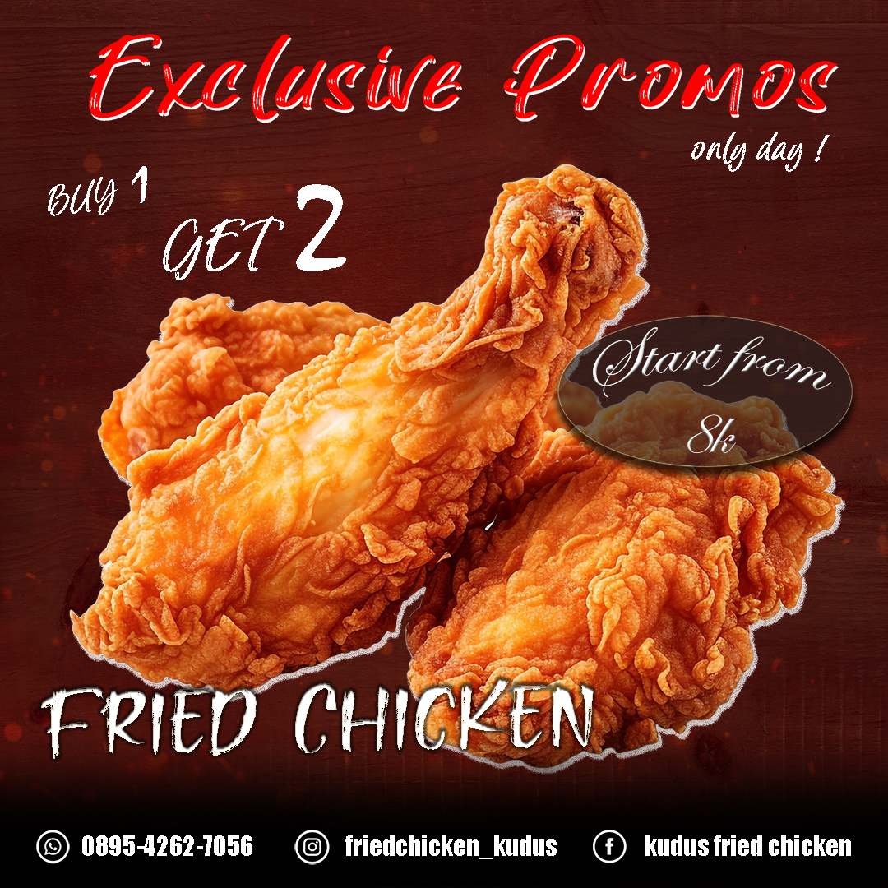
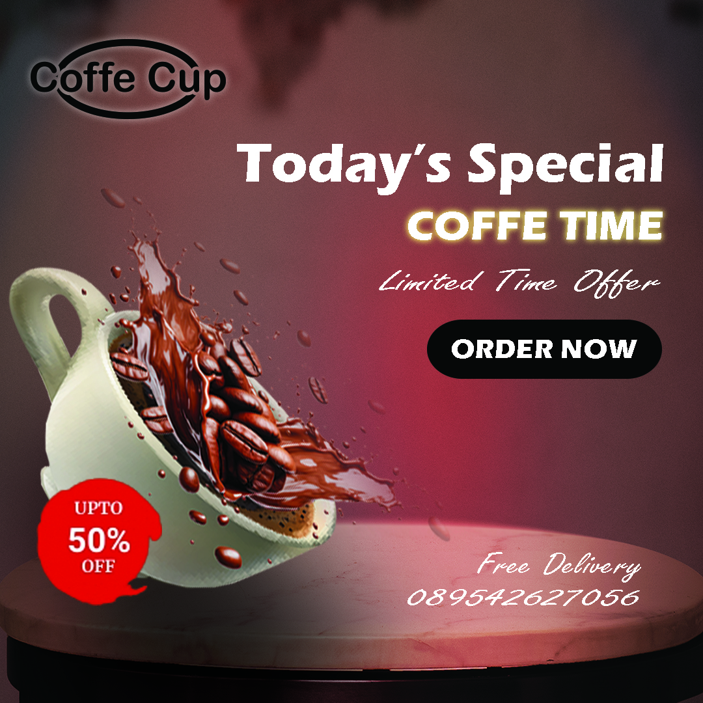
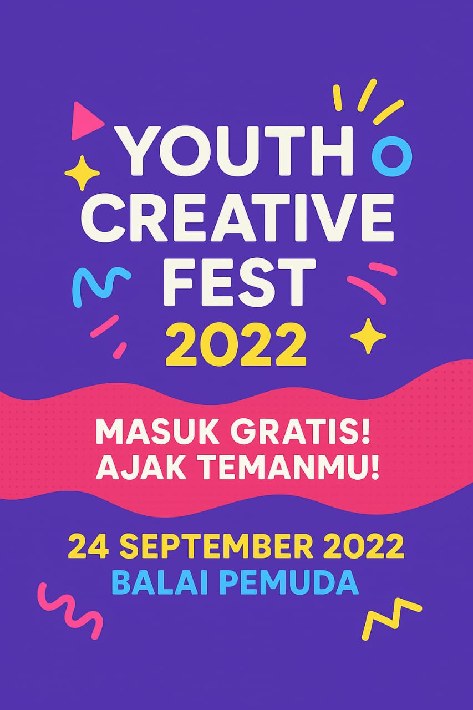
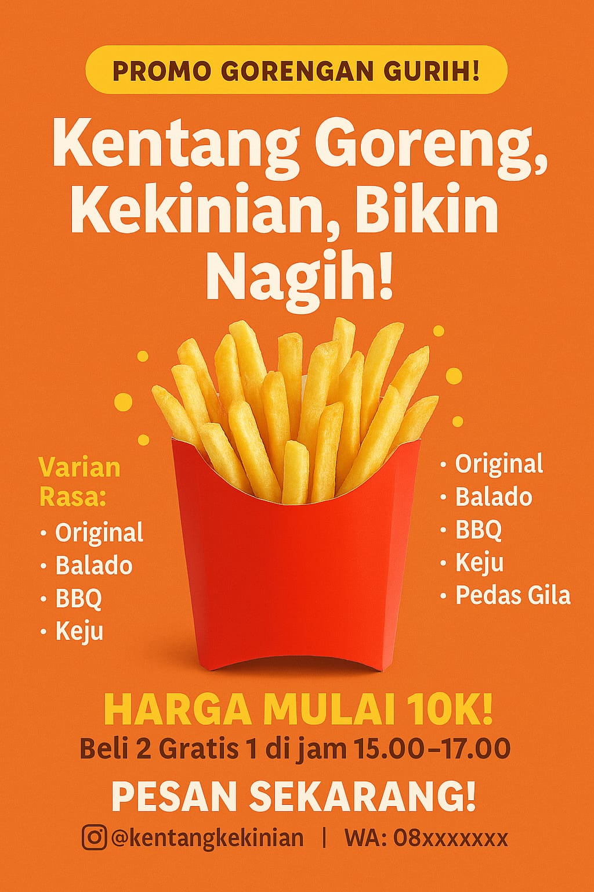
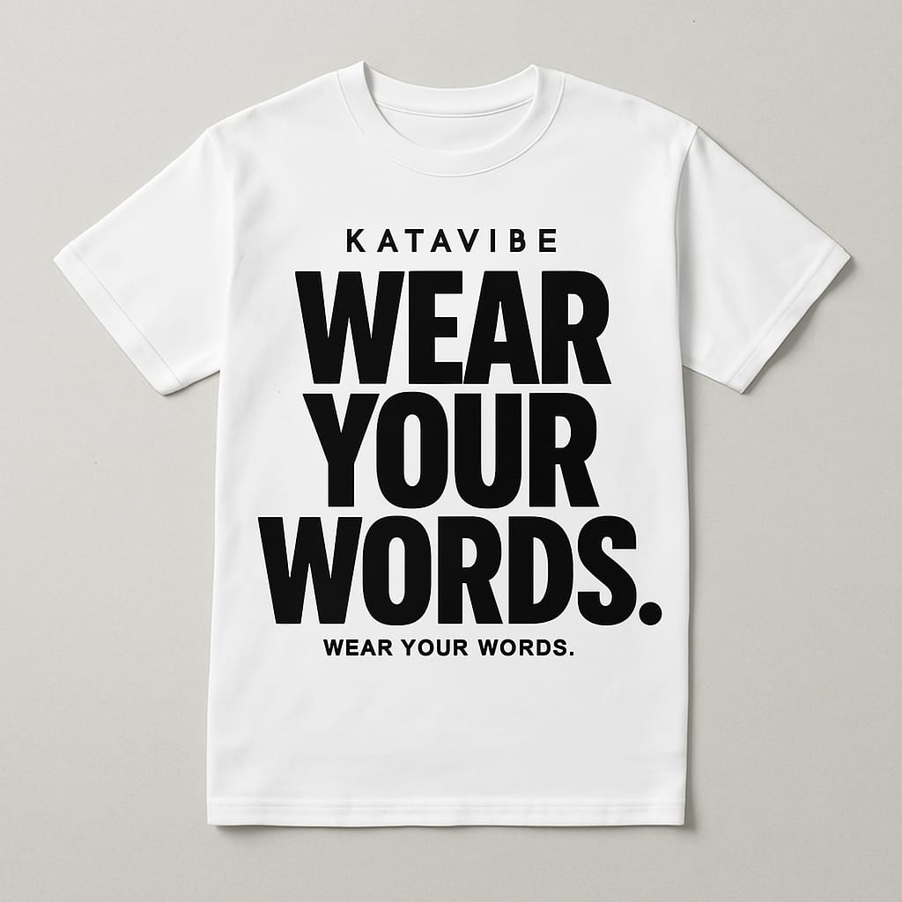
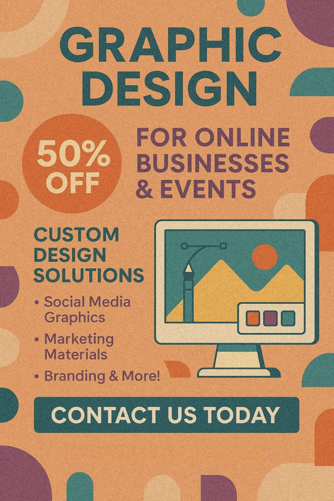
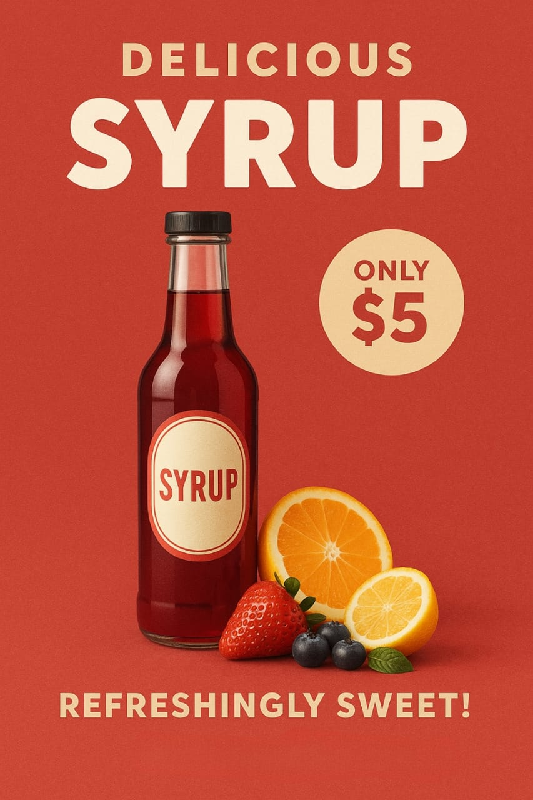

Saya memiliki pengalaman dalam desain visual dan pengelolaan administrasi digital. Terampil dengan Microsoft Office, CorelDraw, dan Adobe Suite. Terbiasa bekerja secara mandiri maupun dalam tim.
Saya senang mengeksplorasi hal baru di dunia desain dan teknologi. Saya terbuka untuk kolaborasi menarik di masa depan, dan selalu bersemangat dalam mengembangkan kemampuan. Mengutamakan kerapian, efisiensi, serta kerja sama yang baik, baik secara individu maupun tim.
SKILL & KEAHLIAN
AutoCAD - Sketch 2D (Profesional)
AutoCAD - 3D (Mahir)
SolidWork (Mahir)
Microsoft Word, Excel, PowerPoint (Profesional)
Adobe Illustrator (Profesional)
CorelDraw (Mahir)
Adobe Photoshop (Mahir)
Adobe Premiere (Menengah)
Adobe After Effect (Dasar)
Adobe InDesign (Dasar)
FreeHand (Mahir)
RIWAYAT PENDIDIKAN & SERTIFIKASI
SMKN 1 Kudus
Jurusan Administrasi Perkantoran
Lulusan Tahun 2020
Sertifikasi LSP P3 Microsoft
Februari 2021 - Februari 2024
Pelatihan Damkar
Disponsori oleh Djarum Foundation
Juara 3 LKS Animasi
Tingkat Kabupaten - September 2019
Juara 2 Blog Design
CommTECH - Agustus 2019
PENGALAMAN KERJA
1. Pura Barutama - Total Security System
Oktober 2021 – April 2025
Terlibat aktif dalam proyek besar: Buku Literasi Nasional, KPU Pemilu 2024, dan Buku Pendidikan Universitas Terbuka.
Mengerjakan desain grafis & pra-cetak sesuai brief dan standar perusahaan.
Menguasai dasar desain & pra-cetak: teori warna, separasi warna (CMYK/RGB), format file cetak (PDF, EPS, TIFF, PS), bleed, crop mark, resolusi gambar.
Terbiasa melakukan preflight check sebelum proses cetak.
Mahir menggunakan Adobe InDesign, Illustrator, Photoshop, dan CorelDRAW.
Memahami proses produksi: proofing, plat cetak, finishing (jilid, laminasi, potong).
Selalu update dengan teknologi desain dan pra-cetak terkini.
Proaktif menyelesaikan kendala teknis dan kreatif selama proses produksi.
2. PT Citra Van Titipan Kilat (TIKI)
Desember 2020 – Oktober 2021
Mengelola data pengiriman harian untuk memastikan distribusi lancar dan akurat.
Memantau pengiriman secara real-time menggunakan sistem pelacakan.
Menangani komplain pelanggan dengan pendekatan cepat, ramah, dan solutif.
Koordinasi rutin dengan tim kurir dan operasional agar pengiriman tepat waktu.
Mempromosikan layanan pengiriman prioritas kepada pelanggan.
Menjamin data penerima tercatat akurat untuk menghindari retur/salah kirim.
Selalu mengikuti SOP pengiriman: pengecekan paket, pencatatan, dokumentasi.
Tetap teliti meski bekerja di bawah tekanan saat volume pengiriman tinggi.
3. CMC Baking Mart
Juli 2020 – Desember 2020
Mengelola transaksi penjualan online via WhatsApp, Instagram, dan marketplace.
Memastikan ketersediaan stok, pengemasan, dan pengiriman pesanan.
Menangani keluhan pelanggan dengan solusi yang cepat dan ramah.
Membuat materi promosi: brosur digital, konten media sosial, dan caption.
Memberikan rekomendasi produk sesuai kebutuhan pelanggan.
Merekap transaksi dan mendokumentasikan bukti transfer secara rapi.
Meningkatkan kepercayaan pelanggan & kelancaran operasional toko online.
PORTOFOLIO PROYEK
Poster Kegiatan Sekolah
2017 - 2018
Software: CorelDraw & Photoshop
Poster berbagai event sekolah dengan visual yang menarik dan informatif.
Produk UMKM (Poster, Brosur, Stiker)
2020 - 2021
Software: CorelDraw
Desain promosi untuk produk UMKM seperti poster, brosur, dan stiker yang mendukung pemasaran visual mereka.
Logo Koki Data
2024
Software: Adobe Illustrator
Desain logo konsep untuk brand fiktif yang memadukan elemen koki dan teknologi. Fokus pada tampilan modern dan unik.
GALERI KARYA
GALERI KARYA
Refiled Water
Air minum isi ulang yang melalui proses penyaringan dengan standar tinggi atau sering kita sebut dengan RO.

Fried Chicken
Hidangan yang terbuat dari potongan daging ayam yang dibalut dengan tepung, makanan ini juga menjadi alternatif pilihan karena harganya yang cukup terjangkau.

Coffee
Minuman yang terbuat dari hasil seduhan biji kopi yang telah disangrai, baik anak muda ataupun tua sangat menggemari minuman ini.

Creative Fest
Merupakan acara perkumpulan yang diselenggarakan dibalai pemuda pada tahun 2022.

French Fries
Merupakan hidangan yang terbuat dari potongan kentang yang digoreng sampai kering.
Branding Logo
Proyek desain yang memiliki fokus pada elemen data yang terdapat dalam sebuah data base.

Mockup T-shirt
Menampilkan identitas visual produk ditawarkan agar dapat dengan mudah dilihat dan dikenali oleh calon pembeli.

Promotion Discount
Contoh desain promosi yang cocok untuk UMKM dan branding produk lokal.

Flafored Water
Merupakan larutan oral yang mengandung sukrosa atau gula kadar tinggi, yang sering kita gunakan dalam campuran air minum.